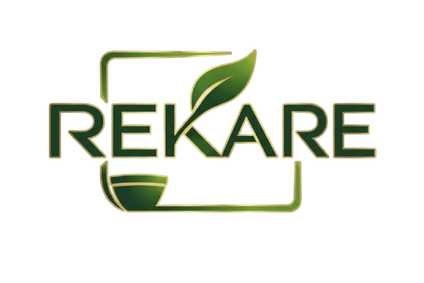

ANA SAYFA
1. Klasik Taş Tozu Saksı
2. Hidroponik Saksı
3. Sallanan Saksı
4. Kök Saksı
5. Duvara Asılan Saksı
6. Cam Tüp Saksı
7. Mesleki Saksılar
8. İsimli Saksılar
9. Telli Telgraf
10. Bonzai Taş Çiçek
11. Havai Bitkiler
12. Tapınak Saksı
13. Şişi Odoşi Saksı
14. Havada duran Saksı
15. Büst Saksılar
16. Çim Adamlar
17. Kokedama
18. Gece parlayan Saksı
19. Geri dönüşüm Saksılar
20. Saksı Aksesuarları
21. Su Kabağı Lambası
22. Lif Sabunları
23. Kalsiyum Gübresi
24. Tavşan Gübresi
25. Kompost Gübre
26. Bokashi Sıvı Gübresi
27. Biyobozunur Saksı